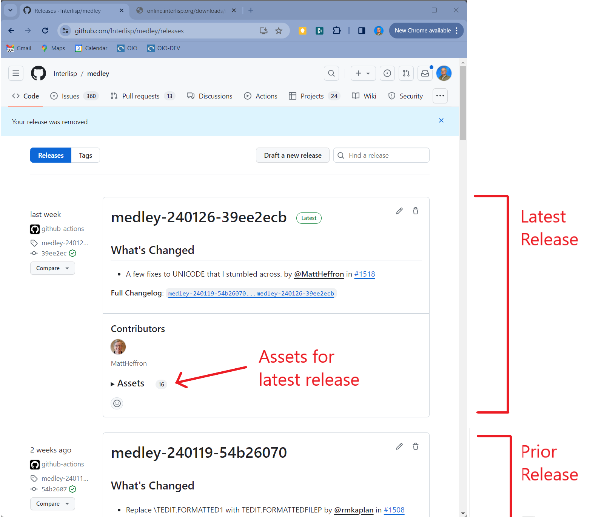
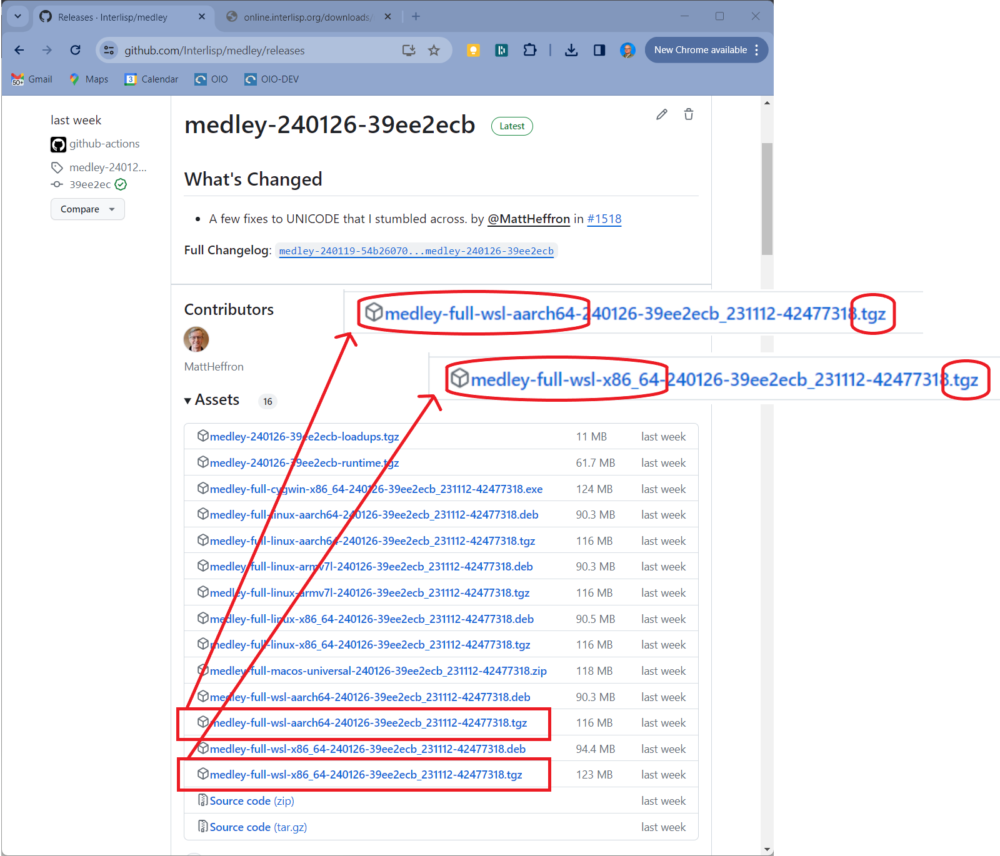

— title: Download WSL (Local Installation) Install Files from Github weight: 40 toc_hide: true hide_summary: true type: docs
- Go to the Releases page for Interlisp/Medley on github.com. Here you will see a list of releases in reverse chronological order.

-
Choose the release you are interested in (most likely the release marked Latest) and click on the arrow next the word Assets to reveal the list of assets (i.e., installation files) for that release.
-
Click on the link that ends with .tgz and begins with either medley-full-wsl-x86_64 (if you are installing on an x86_64-based machine) or medley-full-wsl-aarch64(if you are installing on an Arm64-based machine) to download the .tgz install file.
